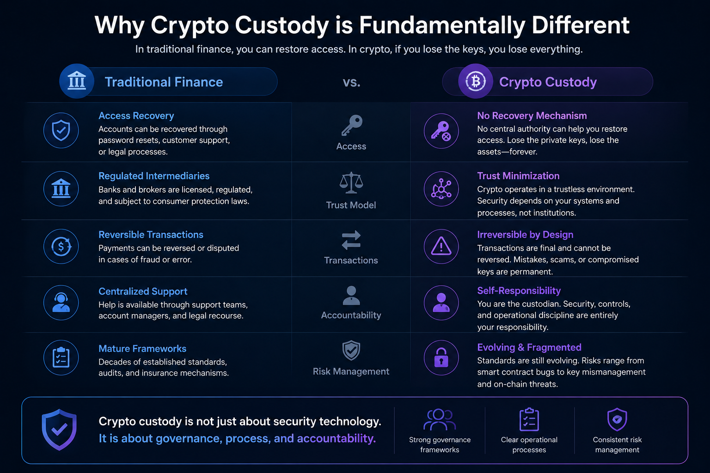

If you hold digital assets for your business — as a fund manager, a treasury operator, a CEO — this is for you.
The real problem
$3.4 billion in crypto was stolen in 2025. The year before, $2.2 billion across 303 incidents (Chainalysis).
The #1 attack vector? Private key compromise. It accounted for 43.8% of all stolen crypto in 2024. Infrastructure attacks (exchange breaches + key compromises) made up over 80% of stolen funds in H1 2025 (Chainalysis).
Recovery rate dropped from ~16% in 2024 to ~8% in 2025 (PeckShield). Once crypto is gone, it is almost always gone.
The FBI reported $11 billion in US crypto fraud in 2025 alone — 181,565 complaints (FBI IC3).
Custody is not really a technology problem. It is a governance problem.

Why crypto custody is fundamentally different from traditional custody
If you come from traditional finance, custody is simple. A bank holds your assets. Something goes wrong — there are reversals, insurance, regulators. Layered protections.
Crypto has none of this by default.
QuadrigaCX: The sole key holder of the exchange died. C$215.7 million in customer assets became permanently inaccessible. No backup. No recovery. The funds are still locked today (Ontario Securities Commission).
FTX: Customer funds commingled with proprietary trading. $8 billion customer shortfall. $12.7 billion judgment (CFTC).
Bybit (Feb 2025): $1.5 billion stolen — not by breaking the cryptography, but by compromising the signing UI. The approval process was the vulnerability (FBI IC3).
These are not edge cases. These are what happens when custody is treated as a technology checkbox instead of an operational discipline.
Traditional custody vs. crypto custody
| Traditional Assets | Digital Assets | |
|---|---|---|
| Reversibility | Transactions can be reversed | Blockchain transactions are final |
| Recovery | Lost credentials can be reset | Lost private keys = permanently lost assets |
| Insurance | FDIC/SIPC coverage is standard | Coverage is limited and expensive |
| Regulation | Decades of established custodial law | Frameworks still emerging |
| Single point of failure | Distributed across institutions | One compromised key can drain everything |
| Asset segregation | Legally required, audited | Varies widely by provider |
What has changed in 2026
The custody provider market reached $3.28 billion in 2025, projected to grow to $7.74 billion by 2032 at 12.95% CAGR (360iResearch). Assets under custody in the broader digital asset custody market: $658 billion in 2025, projected $6,067 billion by 2036 at 22.6% CAGR (Meticulous Research).
The numbers behind the growth:
- 741 million people globally own crypto (Crypto.com)
- 140+ public companies hold Bitcoin — ~1.16 million BTC, over $120 billion (Cryptopolitan; Bitbo)
- Bitcoin ETF AUM: $79.9 billion, 1,248,218 BTC (WalletPilot)
- 83% of institutional investors plan to increase crypto allocations (352 firms surveyed) (EY/Coinbase 2025)
- 55% of hedge funds now have crypto exposure, up from 47% in 2024 (PwC/AIMA 2025)
- 33% of family offices invest in crypto, up from 16% in 2021. Separately, 74% are either invested or actively considering (Goldman Sachs 2025; BNY Wealth 2025)
- 32% of financial advisors allocated crypto in 2025, up from 11% in 2023 (Bitwise/VettaFi 2026)
And custody is now the #1 concern for institutional investors — ranked above volatility, above regulatory uncertainty, above liquidity (Nickel Digital Asset Management).
The regulatory door has opened
January 2025: SEC rescinded SAB 121 with SAB 122 — removed the balance-sheet penalty that kept banks out of crypto custody (SEC).
March 2025: OCC confirmed national banks can custody digital assets without prior approval (OCC Letter 1183).
September 2025: SEC no-action letter confirmed state trust companies can be qualified custodians (SEC).
Banks are entering the custody market now. The question is no longer “can I get institutional-grade custody?” — it is “how do I choose?”
Types of crypto custody solutions
Most guides throw around terms like MPC, multisig, HSM, cold storage without explaining what they actually mean for your business. Here is what matters.
Self-custody
You hold your own private keys. No third party has access. Like keeping cash in your own safe — full control, full responsibility. Best for crypto-native teams with strong technical capability.
Third-party custody
A regulated custodian holds your private keys. Like a bank vault. Best for institutional investors and regulated funds that need qualified custodians.
Hybrid / collaborative custody
Control is shared between your organization and a service provider. No single party can move assets alone. Best for institutions that want balance between control and security.
Comparison
| Self-Custody | Third-Party | Hybrid | |
|---|---|---|---|
| Control | Full | Delegated | Shared |
| Key risk | Lose keys = lose assets | Counterparty risk | Complex coordination |
| Cost | Infrastructure + staff | Fees (basis points on AUM) | Varies |
| Compliance | You build it | Custodian handles it | Shared |
| Best for | Crypto-native teams | Regulated funds | Balanced control |
The technology — in a nutshell
You do not need to understand the cryptography. You need to understand what each approach means for your operations:
- Cold storage — keys kept offline, disconnected from the internet. Harder to steal, slower to use.
- Multisig — multiple people must approve a transaction independently. 3-of-5 approval means no single person and no single compromised account can move funds.
- MPC (multi-party computation) — private key is split into pieces held by different parties. The full key never exists in one place. Transactions require collaboration.
- HSM (hardware security module) — physical device that stores keys and signs transactions in tamper-resistant hardware. Banks already use these for traditional payments.
The technology choice matters less than the governance around it. A perfect MPC setup is useless if you don’t know who has the key shares, what happens when someone leaves, or how approvals work at 2 AM on a Sunday.
The governance gap
The technology for securing private keys is largely solved. What is not solved is the governance layer on top of it.
These are the real operational questions:
- Who can approve a $1 million transfer? One person? Two? Does it change based on the amount?
- What happens when your CFO leaves? How quickly can you rotate key shares or revoke access?
- Who has access on weekends? If a market event requires immediate action, who authorizes it?
- How are approval policies enforced? Through technology? Or through a group chat?
- What is your audit trail? If a regulator asks who authorized a specific transaction six months ago, can you answer in minutes?
The market is starting to notice. In 2026, 66% of institutional investors cited security and key-signing as a key factor when evaluating custodians — up from just 8% in 2025 (EY/Coinbase 2026).
61% of institutions now use a multi-custodian model (EY/Coinbase 2026). Different custodians, different interfaces, different approval workflows, different reporting formats. Many institutions manage all of this with spreadsheets and group chats.
That is basically a patchwork governance system.
If users are building workflows outside the product — Slack + spreadsheet + wallet — then the wallet is not solving the actual problem. The actual problem is governance.
How to evaluate a crypto custody solution
Most evaluation guides focus on technology features. These are the questions that actually matter if you are the one accountable for the assets.
1. Who controls the keys — and what happens if they are unavailable?
This is the most important question. Unlike a bank password, a lost private key cannot be reset.
- How many people or systems need to participate to authorize a transaction?
- What is the recovery process if a key holder is unavailable, leaves, or is compromised?
- Is there a succession plan for key access?
- Has the recovery process been tested — not just documented?
2. What is the approval process for moving assets?
Weak approval processes are how the largest thefts happen (see Bybit).
- Are approval policies enforced by technology or by human process?
- Can requirements change based on transaction size, destination, or time?
- Is there an audit trail of every approval and rejection?
- Can a single admin override the policy?
3. How does it handle your regulatory requirements?
Crypto custody regulation varies by jurisdiction and is changing fast.
- Is the custodian licensed where you operate?
- Does it support the asset segregation requirements of your jurisdiction?
- Can it produce the reports your auditors and regulators need?
- How does it handle regulatory changes?
4. What does the insurance actually cover?
The crypto insurance market reached $9.49 billion in 2025, projected to $192.72 billion by 2033 at 45.8% CAGR (Grand View Research). But coverage varies enormously.
- What is the total coverage vs. assets under custody?
- Does it cover theft, hacking, employee fraud, and operational errors?
- Are hot wallets and cold storage covered equally?
- What is the insurer’s track record of actually paying crypto claims?
5. Can you switch providers without losing access?
Vendor lock-in is real in crypto custody.
- What is the migration process and timeline?
- Are there lock-in periods or exit fees?
- Can you run multiple custodians during transition?
- Who controls the keys during migration?
Evaluation checklist
| Category | Question |
|---|---|
| Key control | Recovery process documented and tested |
| Key control | Succession plan for key holders |
| Approvals | Policies enforced by technology |
| Approvals | Immutable audit trail |
| Approvals | Role-based access that updates with team changes |
| Regulation | Licensed in required jurisdictions |
| Regulation | Asset segregation independently verified |
| Insurance | Coverage amount relative to AUM |
| Insurance | Covers theft, fraud, operational errors |
| Portability | Migration process documented |
| Portability | No contractual lock-in |
What regulations require
Crypto custody regulation has accelerated globally. Here is what matters by jurisdiction.
United States
- SAB 122 (Jan 2025): Rescinded SAB 121, removed balance-sheet penalty for banks offering custody (SEC)
- OCC Letter 1183 (Mar 2025): Banks can custody digital assets, hold stablecoin reserves, participate in blockchain networks — no prior approval needed (OCC)
- SEC No-Action Letter (Sep 2025): State trust companies can be qualified custodians under the Investment Advisers Act (SEC)
European Union
- MiCA: EUR 125,000 minimum capital. Asset segregation, regular audits, governance policies required.
Hong Kong
- SFC: 98% of client assets must be in cold storage. No commingling of client and proprietary assets.
Singapore
- MAS: Asset segregation with daily reconciliation. SGD 250,000 minimum capital.
United Arab Emirates
- VARA: 15% of client assets must be immediately liquid. Monthly stress testing.
By jurisdiction
| Jurisdiction | Capital | Cold Storage | Segregation | Audit |
|---|---|---|---|---|
| US | Varies by charter | No ratio mandated | Required | Varies |
| EU (MiCA) | EUR 125,000 min | Not specified | Required | Regular |
| Hong Kong | Per SFC license | 98% cold | Required, no commingling | Ongoing |
| Singapore | SGD 250,000 | Not specified | Required, daily reconciliation | Ongoing |
| UAE | Per VARA license | Not specified | Required | Monthly stress test |
FAQ
What is crypto custody?
In a nutshell — it is the safekeeping of private keys that control digital assets on a blockchain. Whoever holds the private keys controls the assets. Custody solutions manage the storage, access, and authorization of these keys.
Hot storage vs. cold storage?
Hot storage means keys are on devices connected to the internet. Fast but more exposed to attacks. Cold storage means keys are offline — hardware devices, air-gapped systems. Much harder to hack, but slower to access. Most institutional setups use both: cold for the majority of assets, hot for operational liquidity.
How much does it cost?
Third-party custodians typically charge 0.05% to 0.50% of assets under custody per year, plus transaction fees. Self-custody requires hardware, software, security infrastructure, and specialized staff. Self-custody often costs more than third-party custody for institutions holding under $100 million.
Is crypto custody insured?
Some custodians offer insurance. The crypto insurance market reached $9.49 billion in 2025 (Grand View Research). But coverage amounts are usually a fraction of total assets under custody. Verify: coverage amount, what events are covered (theft, fraud, operational errors), and whether hot and cold storage are covered equally.
What happens if a custody provider goes bankrupt?
It depends on whether client assets were properly segregated. Under most regulatory frameworks, segregated assets should not be part of the bankruptcy estate. But FTX showed that not all providers follow segregation requirements in practice. Verify that your custodian’s segregation is independently audited.
How do I switch providers?
Generate new key material with the receiving custodian. Transfer assets on-chain. Verify receipt. Decommission the old arrangement. It can take days to weeks. During migration, assets are briefly in transit on-chain — that is a window of elevated risk that needs careful management.
Where this is going
The market is moving from “which wallet?” to “which governance model?” The progression looks something like:
- Beginner: Which wallet?
- Intermediate: Which custody model?
- Advanced: Which governance model?
If you are reading this, you are probably at the advanced stage. You have already discovered that custody is not the real problem. Custody is one implementation detail inside a larger governance system.
The question is not: can one system support all these custody models? Technically, yes.
The real question is: who can move assets, under what conditions, with what recovery guarantees, under what compliance requirements?
Private keys, MPC, multisig, HSM, passkeys — these are implementation details. The primary abstraction is asset governance.